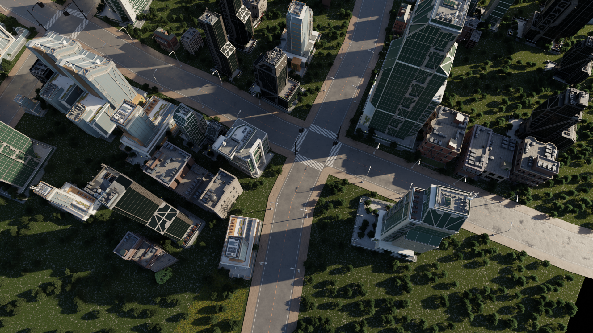

Urban areas, as the primary human habitat in modern civilization, accommodate a broad spectrum of social activities. With the surge of embodied intelligence, recent years have witnessed an increasing presence of physical agents in urban areas, such as autonomous vehicles and delivery robots. As a result, practitioners significantly value crafting authentic, simulation-ready 3D cities to facilitate the training and verification of such agents. However, this task is quite challenging. Current generative methods fall short in either diversity, controllability, or fidelity. In this work, we resort to the procedural content generation (PCG) technique for high-fidelity generation. It assembles superior assets according to empirical rules, ultimately leading to industrial-grade outcomes. To ensure diverse and self contained creation, we design a management protocol to accommodate extensive PCG plugins with distinct functions and interfaces. Based on this unified PCG library, we develop a multi-agent framework to transform multi-modal instructions, including OSM, semantic maps, and satellite images, into executable programs. The programs coordinate relevant plugins to construct the 3D city consistent with the control condition. A visual feedback scheme is introduced to further refine the initial outcomes. Our method, named CityX, demonstrates its superiority in creating diverse, controllable, and realistic 3D urban scenes. The synthetic scenes can be seamlessly deployed as a real-time simulator and an infinite data generator for embodied intelligence research.
The proposed CityX, under the guidance of multimodal inputs including OSM data, semantic maps, and satellite images, facilitates the automatic creation of realistic large-scale 3D urban scenes.The generated models are characterized by delicate geometric structures, realistic material textures, and natural lighting, allowing for seamless deployment in the industrial pipeline.

The Multi-agent framework includes a pre-processing stage and four task stages. During the pre-processing stage, the PCG is encapsulated into action functions according to the PCG Management Protocol proposed in this work. In the task stages, the planner first specifies the subtask plans based on the user's description and provided inputs. For each subtask, the planner's assistant validates the proposed subtask. If the conditions are met, the planner passes the relevant parameters to the executor to be performed in Blender. The results are then evaluated by the feedback agent. If the requirements are met, the process moves to the next subtask; if not, it reverts until all tasks are completed. This coordinated effort among agents facilitates the generation of large-scale urban scenes.
For each image (a), we have a high-resolution mesh (b), which readily yields Depth (c), Surface Normals (d), Diffuse Map (e), Instance Segmentation masks (f), Ambient Occlusion (g), Cryptomatte Object/Material Mask (h/i), and Glossy Direct/Color/Indirect (j/k/l).We used a 1920 × 1080 resolution with 10,000 random samples per pixel, a standard setting in Blender that effectively eliminates sampling noise, resulting in a high-quality final image.
@article{,
author = {Shougao Zhang and Mengqi Zhou and Yuxi Wang and Chuanchen Luo and Rongyu Wang and Yiwei Li and Zhaoxiang Zhang and Junran Peng},
title = {CityX: Controllable Procedural Content Generation for Unbounded 3D Cities},
journal = {https://arxiv.org/pdf/2407.17572},
year = {2024},
}